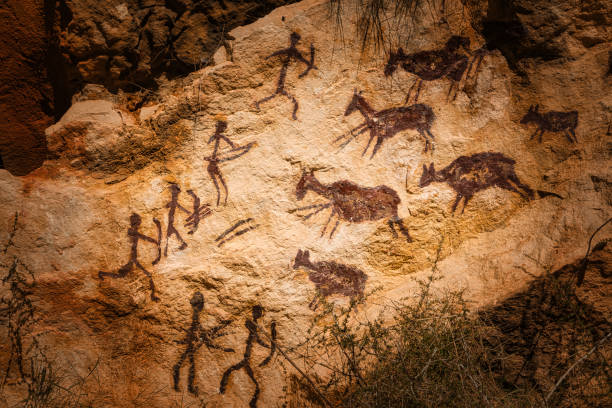
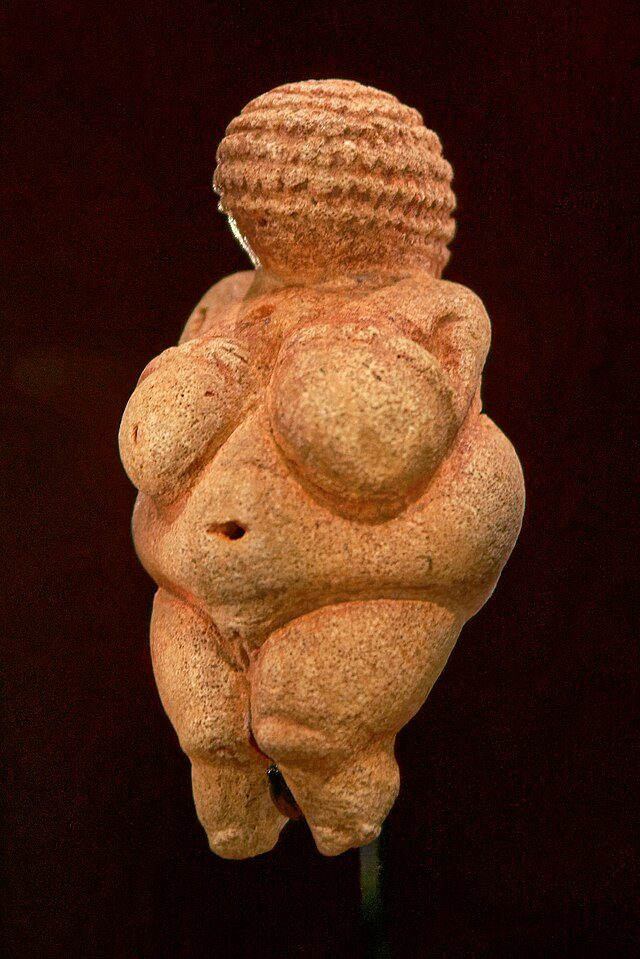
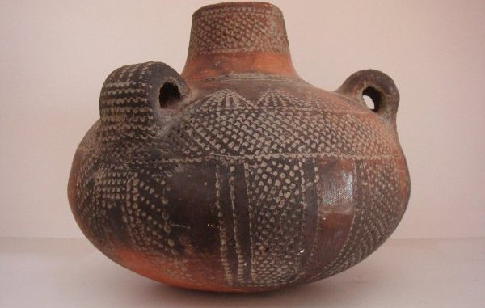
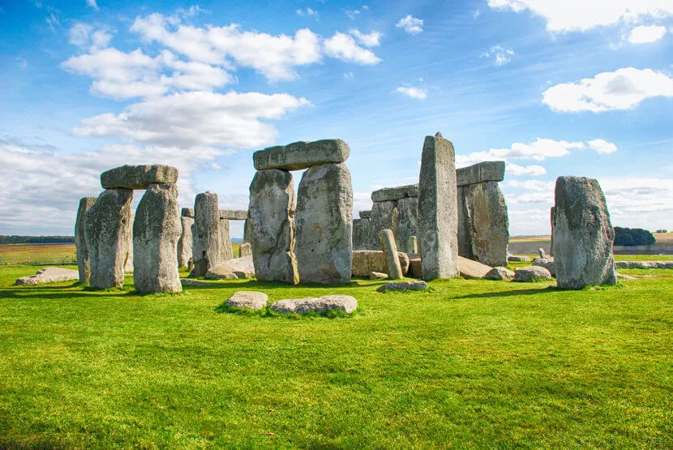

Arte pré-histórica
História
Essa foi uma época em que os homens ainda não haviam inventado a escrita, portanto, os desenhos, esculturas e objetos encontrados feitos pelas pessoas da época nos dão pistas de como elas viviam e se organizavam em um passado muito distante. A arte pré-histórica consiste nas artes feitas em cavernas, gravuras esculpidas em rochas, esculturas, estatuetas e outros. Essas artes ocorreram durante três períodos da história:
- Paleolítoco:
Uma dos tipos artisticos que mais representam esse periodo são as artes rupestres ou parietal, essas são artes eram realizadas nas cavernas ou em locais próximos a elas, e nelas haviam desenhos de animais e homens que normalmente representavam a caça e algumas representavam cenas do cotidiano. Os especialistas acreditam que as pinturas rupestres tenham surgido aproximadamente há 40 mil anos em grupos humanos que já possuíam domínio do fogo e tinham acesso a ferramentas produzidas por meio da lascagem de pedra. Nesse período também foram produzidas esculturas, geralmente de figuras femininas.
  - Neolítico:
O periodo Neolitico é caracterizado pela evolução em relação ao periodo anterior. Elas podem ser destacadas, principalmente, pela sedentarização do homem, onde eles deixam de ser nômades e passam a construir vilas. Assim, também desenvolveram técnicas agrícolas e a domesticação dos animais que foram um dos principais pontos caratceristicos do período, também foram desenvolvidas habilidades arquitetônicas, onde começaram a construir monumentos megalíticos que também são caratceristicos do período. Com essas habilidades confeccionadas, o homem conseguiu criar novas ferramentas, que auxiliavam sua vida. Algumas produções que diferem do período Paleolítoco:
- objetos de cerâmica
- trajes feitos com pele de animais
- construção de monumentos megalíticos
  - Idade dos Metais:
Como o nome diz, é caracterizado pelo descobrimento dos metais e foi subdivido por períodos ao decorrer do descobrimentos de mais metais, como o ferro, cobre e bronze. Nesse período foram produzidos utensílios, instrumentos e ferramentas com o intuito de ajudarem cada vez mais nas atividades do dia a dia deles, como a pesca, caça, agricultura e mais. Além disso, foram encontrados esculturais de metais que representam mulheres e gueirros.


Mesmo com alguns dados sobre o tema ainda há muitas icognitas sobre esse tipo de arte pois não há tantos registros ou explicações precisas que fazem os historiadores terem certeza do que realmente aconteceu ou o que elas representam; nesse mundo há um debate que persiste entre os historiadores que é a questão de qual é o objetivo das obras e o que elas representam, com isso foi criada duas teorias do que elas podem significar:
- é uma forma de expressão em que o homem achou para se expressar
- é uma forma ritualistica que o homem ahcou para se conectar com a natureza
Muitos acham que a essas artes só aconteceram em territórios estrangeiros e as artes rupestres não aconteceram no Brasil, mas pelo contrário, aconteceram aqui no Brasil.
Aqui no Brasil as pinturas rupestres foram encontradas nas cavernas mais antigas do Brasil em 1970 no Piauí. Nós temos uma grande variedade dessas pinturas ao redor de nosso solo brasileiro, podemos encontra-las em varios estados diferentes, como Piauí, Paraíba, Mato Grosso, Santa Catarina, Rio Grande do Norte e Pernambuco. O local onde se concentra uma maior parte dessas artes é na Serra da Capivara no estado do Piauí, onde que abriga mais de 100 pinturas rupestres que retratam cenas de caça e guerra.